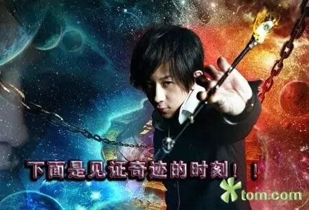

——吴青峰
曾经的你是否真心诚意的相信过某个人，愿意付出你的所有去满足他（她）的一切？亲情、爱情、友情。或多或少我们曾经幼稚的认为只要自己信任别人，别人就不会让我们失望，但是结果却总是差强人意。
信任是这个世界上最容易失去的东西，也是最难以挽回的东西。
我们“受伤”之后决定不再相信任何人!可是很多时候，事情并不完全和你想的一样。比如，你和男朋友约看电影，男朋友却突然联系不上，最后你觉得他是故意放你鸽子，觉得他是不在乎你。后来你男朋友向你解释，原来他家里有急事需要回家，手机在路上没电了。
信任，不是指没有误会，而是总会给对方把误会解释清楚的机会。
在艰苦中成长成功之人，经常由于心理的阴影，会致使变态的偏差。这类偏差，便是对社会对人们始终有一种敌视的敌意，不相信任何一个人，更不同情任何一个人。爱钱如命的悭吝，还是心理变态上的次要现象。相反的，有器度有见识的人，他固然从艰苦困难中成长，反而更具有同情心和慷慨好义的胸怀怀抱。由于他知道人生，知道世情的甘苦。
南怀瑾
我相信每一个人都有不相信别人的时候，所以这次我们就来谈谈你们的这些经历吧。
Gasby突然说不知道给你自己的CC起什么名字了，也许他觉得自己是学生，没有什么经历可讲，也许他突然遇到了人生中很无语的事，或许他意气风发写了一首诗分享给大家。神秘的“无题”，总是让人充满期待。
